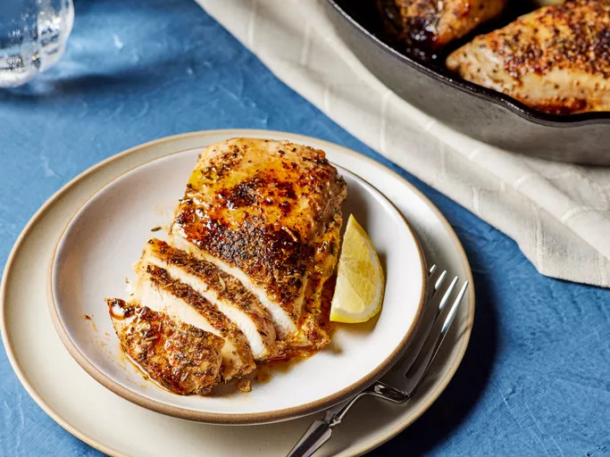

Perfect Cast Iron Skillet Chicken Breasts

Description
Use a cast iron skillet to cook perfectly juicy and tender chicken breasts. Make sure your skillet is hot and the chicken sizzles as it hits the pan to prevent sticking.
Ingredients
- 4 (6-ounce) skinless boneless chicken breasts
- 1 tablespoon dried Italian seasoning
- 1 1/2 teaspoons kosher salt
- 1/2 teaspoon smoked paprika
- 1/2 teaspoon freshly ground black pepper
- 2 tablespoons canola oil
- 1/4 cup unsalted butter
- 3 cloves garlic, peeled and smashed
- 4 thyme sprigs
- 2 rosemary sprigs
- lemon wedges, for serving (optional)
Steps
- Gather all Ingredients
- Season chicken all over with Italian seasoning, salt, smoked paprika and black pepper.
- Heat oil in a large cast-iron skillet over medium until shimmering. Add chicken, rounded side down, and cook, undisturbed, until the bottom
side is browned, 4 to 5 minutes. Flip and continue to cook, undisturbed, until the other bottom side is browned, 4 to 5 minutes.
- Add butter, garlic, thyme, and rosemary, and cook until butter is melted, about 1 minute. Carefully tilt pan toward you so butter pools and spoon herb butter over the top of each breast, until a thermometer inserted into the thickest portion of breast registers 165 degrees F (74 degrees C), 3 to 5 minutes.
- Transfer chicken to a serving platter and let rest for 5 minutes. Serve with pan drippings and lemon wedges, if desired.